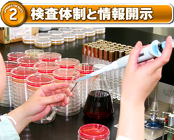

自社工場内に、細菌検査設備を備え専任の人員が常駐する品質管理室を設け、安全・安心な食材の供給に努めております。また産地、アレルギー物質、カロリーの情報開示にも取り組んでおります。
◇国産牛については、放射能検査証明書付きで安全が確認されている原料のみを仕入れております。
◇食肉、加工食品類、漬物類などの食材について、大腸菌、黄色ぶどう球菌、サルモネラ菌などを含む幅広い細菌検査を実施しております。
◇専任の人員が店鋪設備、調理器具の定期的な拭き取り細菌検査及び、衛生管理指導を実施しております。
◇放射能検査証明書について、店頭での開示を開始しております。
◇金属探知機、X-Ray透視機使用による検査を実施しております。
◇トレーサビリティーにて産地、飼育履歴、販売履歴など生産履歴管理の開示を徹底しております。
◇野菜の産地表示、カロリー表示、アレルギー表示をしております。
◇食肉、加工食品類、漬物類などの食材について、大腸菌、黄色ぶどう球菌、サルモネラ菌などを含む幅広い細菌検査を実施しております。
◇専任の人員が店鋪設備、調理器具の定期的な拭き取り細菌検査及び、衛生管理指導を実施しております。
◇放射能検査証明書について、店頭での開示を開始しております。
◇金属探知機、X-Ray透視機使用による検査を実施しております。
◇トレーサビリティーにて産地、飼育履歴、販売履歴など生産履歴管理の開示を徹底しております。
◇野菜の産地表示、カロリー表示、アレルギー表示をしております。